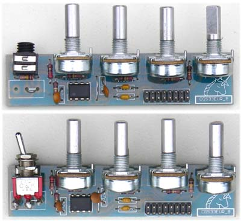
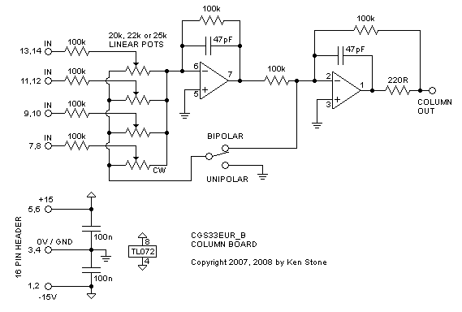

|

The matrix mixer is a four input, multiple output bipolar or unipolar DC coupled mixer, for mixing control voltages or audio signals. In cases where you require several different mixes from a common set of signals, this module is ideal. Each output can be independently switched to operate in unipolar or bipolar mode. When in unipolar mode, all pots feeding that output behave in regular fashion, that is when the knob is fully counter-clockwise, no signal from the associated input passes into the mix. As the knob is advanced clockwise, a greater portion of the signal passes into the mix. In bipolar mode, each knob has a zero position mid-way through it's travel. Turning the knob anti-clockwise will add an increasing portion of a negative (inverted) version of the signal at the corresponding input, while turning the knob clockwise will add an increasing portion of the original signal to the mix.
A little on how it works:
Input buffers for the Matrix Mixer.

As is obvious from the circuit diagram, the matrix mixer is little more than a group of standard op-amp summing circuits and buffers. Any signal applied to an input is first buffered by a voltage follower based on a TL071 op-amp so as to not load down the output of whatever module is driving it. The buffered signal from each input are then fed to the inputs of five identical column mixers. The pots steer the signal to either the first or second op-amp of the mixer in bipolar mode, or the first op-amp or ground in unipolar mode. Any signal that is sent to the first op-amp is inverted, then mixed with any signal being sent to the second op-amp. This signal is then inverted again, and sent to the output jack.
Construction
The component overlays. Before you start assembly, check the board for etching faults. Look for any shorts between tracks, or open circuits due to over etching. Take this opportunity to sand the edges of the board if needed, removing any splinters or rough edges. It is possible to build this using Cliff style jacks on the PCBs, or to use other jacks, in which case a different method of mounting the buffer board will be required. When you are happy with the printed circuit boards, construction can proceed as normal, starting with the resistors first, followed by the IC socket if used, then moving onto the taller components. Take particular care with the orientation of the polarized components such as electrolytics, diodes, transistors and ICs. When inserting ICs into sockets, take care not to accidentally bend any of the pins under the chip. Also, make sure the notch on the chip is aligned with the notch marked on the PCB overlay. If you are adventurous, you could probably mount PCB type switches on the foil side of the PCB, as there are pads to allow doing so, but using regular switches on flying leads is probably a better way to do it. If you do not install switches, you will need to put links in their place. Installing a link in the position shown will make that board behave in a bipolar fashion. Linking between the center hole and the opposite pad (0V) will set that board in unipolar mode. Column boards are connected to the main board via a 16 way ribbon cable and 16 pin insulation displacement connectors. For each additional column board used, you need only add another connector to the same ribbon cable.

If additional rows are required, add extra input resistors and pots as per those already on the PCB, and add another row buffer per row using another TL071. The value of the pot used in the processor will affect the response of the pot. The pot itself MUST be linear. For example, a 50k will be slightly anti-log. Despite the circuit diagram listing 20k, I would recommend the use of 100k pots.
Notes:
Parts list This is a guide only. Parts needed will vary with individual constructor's needs. If anyone is interested in buying these boards, please check the PCBs for Sale page to see if I have any in stock.
Can't find the parts? See the parts FAQ to see if I've already answered the question. Also see the CGS Synth discussion group.
Article, art & design copyright 2008 by Ken Stone
| |||||||||||||||||||||||||||||||||||||||||||||||||||||||||||||||||||||||